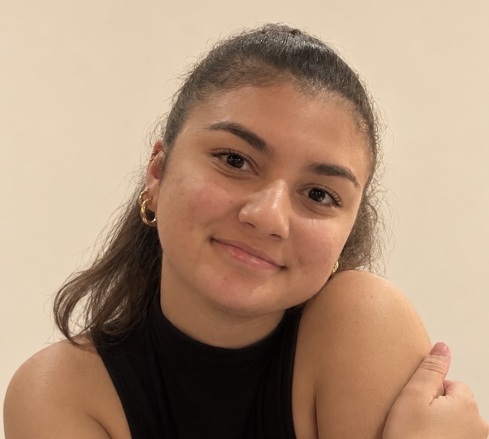

Hello, moi c'est Morgane ✦

J'ai 22 ans et je m'intéresse à tout ce qui permet de découvrir de nouveaux univers et de voir les choses sous différents angles. En dehors de la communication digitale, j'aime particulièrement la photographie, les voyages, la décoration et la lecture. Ce sont des centres d'intérêt qui nourrissent mon inspiration et mon attrait pour les univers visuels, les ambiances et les détails. J'accorde également beaucoup d'intérêt à la manière dont les marques racontent leur histoire, construisent leur image et partagent leur identité à travers les réseaux sociaux.
La communication, les réseaux sociaux et l'univers des marques sont des domaines qui me passionnent depuis longtemps. Ce qui m'attire particulièrement, c'est la façon dont une marque construit son identité, partage son univers et crée du lien avec son public. Après une licence d'anglais, j'ai choisi de donner une dimension professionnelle à cette passion en intégrant la formation RACM chez Tetranergy Business School. Je souhaite aujourd'hui développer mes compétences, apprendre auprès de professionnels et mettre progressivement mes idées en pratique.
Ce qui me définit
- Curiosité constante pour les nouvelles tendances
- Goût pour l'écriture comme pour l'image
- Envie d'apprendre, de progresser et de s'investir dans une équipe
Ma recherche d'alternance
- Poste : Chargée de communication ou chargée de marketing digital en alternance
- Rythme : 2 semaines / 2 semaines
- Durée : 12 mois · Septembre 2027
- Lieu : Ville · mobile
Études
- 09/2026
Formation RACM chez Tetranergy Business School
- 09/2022 — 07/2026
Licence obtenue à l'Université de La Réunion.
Langues, Littérature et Civilisation Étrangères et Régionales parcours Anglais.
- 09/2019 — 07/2022
Baccalauréat Général.
Spécialité LLCER Anglais & Géopolitique.
Expériences
- 12/2025 (2 semaines : stage de licence)
Stagiaire réceptionniste
Hôtel Tulip Inn, Saint-Clotilde.
- Été 2025
Employée polyvalente en restauration
VVF Lège-Cap-Ferret (33)
- 09/2022 — 01/2025
Bénévole communication & évènements
Association étudiante, Université de La Réunion